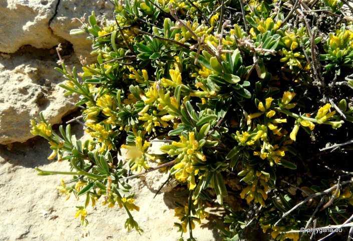
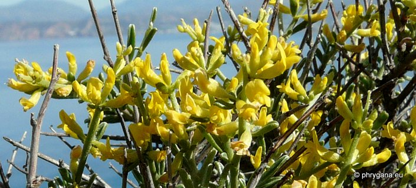
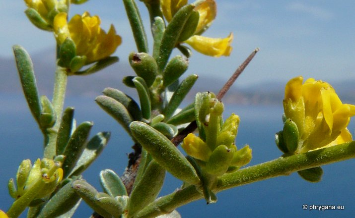
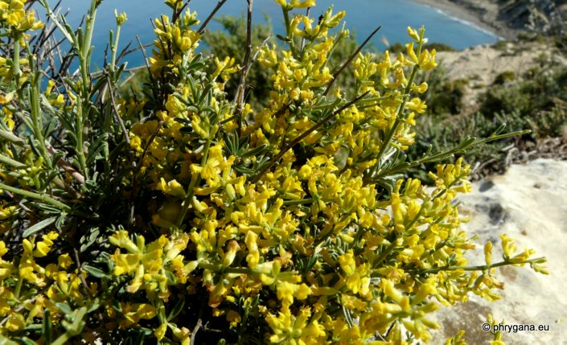

Genista acanthoclada Matala (Nissos) 08 mai 2012
Genista acanthoclada Matala (Nissos) 08 mai 2012

Genista acanthoclada Matala (Nissos) 08 mai 2012
Genista acanthoclada Matala (Nissos) 08 mai 2012
| PHRYGANA | Fauna | Flora | Galles | liste des espèces |
contact -
info - commentaires phrygana1 (at) gmail.com |
| Particularités crétoises | nouveautés | Mines | ressources naturelles |
| Genista acanthoclada subsp. acanthoclada DC. |
| 372 | Flora | FABACEAE | Genisteae | Genista L. |
|
 Genista acanthoclada Matala (Nissos) 08 mai 2012 |
| Buisson très ramifié et épineux; branches opposées, vertes terminant par une épine; vieilles branches épaissies à la base | |
| Feuilles: composées-trifoliées, les folioles (5 - 10 mm) elliptiques étroites, étant plus large vers l'apex | |
| Fleurs: axillaires, groupées en grappes (2 à 15 fleurs) sur les pointes épineuses; corolle longue de 6 à 10 mm, jaune or; calice (2.5 - 5 mm) à poils soyeux épars | |
| Fruit: une gousse ovoïde à petite pointe, longue de 8 - 9 mm, à poils soyeux; 1 à 2 graines | |
| Hauteur: 30 - 80 cm | Type biologique: chaméphyte frutescent |
| Floraison: avril mai juin | |
| Altitudes: 0 - 1100 m | |
| Statut en Crète: indigène | |
| Biotopes en Crète: garrigue, terrasses abandonnées, phrygana, terrains pierreux, forêts claires | |
| Distribution: Grèce, Crète, Turquie | |
| Espèce héliophile. | |
|
 Genista acanthoclada Matala (Nissos) 08 mai 2012 |
|
 Genista acanthoclada Matala (Nissos) 08 mai 2012 |
|
Genista acanthoclada Matala (Nissos) 08 mai 2012 |
|
 Genista acanthoclada Matala (Nissos) 08 mai 2012 |
| 16 juin 2012 |
| © paul fontaine 2007 -- 2012 |